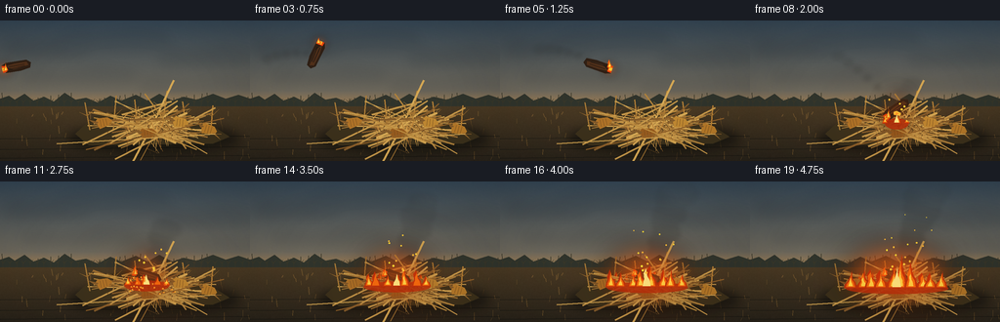
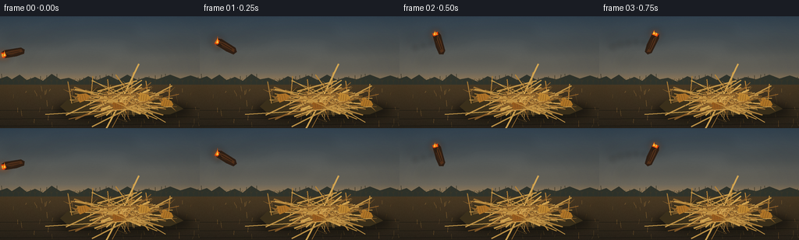

CODING AGENTS AS PIXEL WORLD MODELS
traex/GPT-5.6-Sol · material_0030
点击播放 · 原生 RGB 像素
逐轮保存的候选
回放视频、检查图与代码变化。
每份候选均可单独播放。实际图片检查记录在下方工具轨迹中。
候选 01播放与检查图
点击播放 · 原生 RGB 像素


展开代码变化
--- 上一保存版本
+++ 本次保存版本
@@ -0,0 +1,386 @@
+from pathlib import Path
+import math
+import numpy as np
+from PIL import Image, ImageDraw, ImageFilter
+import artifact_io
+
+# Deterministic procedural animation. All geometry is specified in the 256x144
+# composition and rendered at 3x resolution for smooth, cinematic edges.
+W, H, N, FPS = 256, 144, 20, 4.0
+S = 3
+CASE_DIR = Path(__file__).resolve().parent
+TAU = math.tau
+
+
+def sc(v):
+ return int(round(v * S))
+
+
+def pts(seq):
+ return [(sc(x), sc(y)) for x, y in seq]
+
+
+def line(draw, seq, fill, width=1):
+ draw.line(pts(seq), fill=fill, width=max(1, sc(width)), joint="curve")
+
+
+def ellipse(draw, box, fill, outline=None, width=1):
+ draw.ellipse(tuple(sc(v) for v in box), fill=fill, outline=outline,
+ width=max(1, sc(width)))
+
+
+def polygon(draw, seq, fill):
+ draw.polygon(pts(seq), fill=fill)
+
+
+def rot_poly(cx, cy, coords, angle):
+ c, s = math.cos(angle), math.sin(angle)
+ return [(cx + x*c-y*s, cy + x*s+y*c) for x, y in coords]
+
+
+def lerp(a, b, u):
+ return a + (b-a)*u
+
+
+# A stable fine-grained film/soil texture, generated locally.
+rng_bg = np.random.default_rng(3812)
+noise = rng_bg.normal(0, 1, (H*S, W*S))
+noise_im = Image.fromarray(np.uint8(np.clip(noise*17 + 128, 0, 255)), 'L').filter(ImageFilter.GaussianBlur(sc(.22)))
+
+# Stable stalk specifications so only fire/smoke move.
+rng = np.random.default_rng(1207)
+stalks = []
+for i in range(57):
+ # Mostly crisscrossing harvested stalks, plus a handful of steeper stems.
+ ang = rng.uniform(-0.42, 0.42) if i < 46 else rng.uniform(-1.25, 1.25)
+ length = rng.uniform(42, 120)
+ mx = rng.normal(156, 14)
+ my = rng.normal(108, 5.0)
+ x1 = mx - math.cos(ang)*length*.5
+ y1 = my - math.sin(ang)*length*.5
+ x2 = mx + math.cos(ang)*length*.5
+ y2 = my + math.sin(ang)*length*.5
+ col = rng.choice([(157,111,49,255),(177,130,59,255),(194,149,72,255),
+ (132,91,42,255),(211,166,83,255)])
+ width = rng.uniform(1.0, 2.25)
+ leaf_side = rng.choice([-1, 1])
+ leaf_u = rng.uniform(.22, .72)
+ leaf_len = rng.uniform(7, 19)
+ stalks.append((x1,y1,x2,y2,col,width,leaf_side,leaf_u,leaf_len,rng.uniform(-.25,.25)))
+
+cobs = [(106,105,-.22, (174,114,39,255)), (184,105,.12,(190,135,49,255)),
+ (151,116,-.08,(151,91,30,255)), (213,112,.28,(181,121,40,255))]
+
+
+def make_background():
+ arr = np.zeros((H*S, W*S, 3), dtype=np.float32)
+ # Smoky late-afternoon sky: cool above, amber at the low horizon.
+ top = np.array([52, 69, 83], float)
+ mid = np.array([108, 103, 91], float)
+ low = np.array([188, 137, 76], float)
+ for y in range(H*S):
+ yy = y/S
+ if yy < 72:
+ u = yy/72
+ col = top*(1-u) + mid*u
+ else:
+ u = min(1, (yy-72)/24)
+ col = mid*(1-u) + low*u
+ arr[y,:,:] = col
+ n = (np.asarray(noise_im, dtype=np.float32)-128)[:, :, None]
+ arr += n*np.array([.09,.08,.06])[None,None,:]
+ im = Image.fromarray(np.uint8(np.clip(arr,0,255)), 'RGB').convert('RGBA')
+ d = ImageDraw.Draw(im, 'RGBA')
+ # Layered distant cloud banks.
+ cloud = Image.new('RGBA', im.size, (0,0,0,0)); cd = ImageDraw.Draw(cloud,'RGBA')
+ for bx,by,bw,bh,a in [(5,21,80,16,35),(64,12,100,18,27),(162,30,88,17,30),
+ (21,52,111,12,26),(141,59,122,15,25)]:
+ for j in range(7):
+ xx=bx+j*bw/8 + 5*math.sin(j*2.1)
+ ellipse(cd,(xx,by+3*math.sin(j),xx+bw/3,by+bh), (28,36,43,a))
+ cloud = cloud.filter(ImageFilter.GaussianBlur(sc(5.2)))
+ im = Image.alpha_composite(im, cloud)
+ d = ImageDraw.Draw(im,'RGBA')
+ # Far trees and unharvested corn silhouette on the horizon.
+ polygon(d, [(0,88),(0,80),(9,77),(15,81),(25,75),(34,82),(45,78),(55,83),
+ (66,74),(77,81),(88,79),(100,84),(113,77),(124,82),(139,76),
+ (151,82),(163,75),(176,82),(188,78),(201,81),(218,75),(231,80),
+ (244,76),(256,80),(256,96),(0,96)], (47,51,43,255))
+ # Fine upright corn silhouettes.
+ for x in range(3,256,7):
+ h = 5 + ((x*13)%10)
+ line(d,[(x,88),(x+((x%3)-1),88-h)],(54,53,40,220),.65)
+ if x%14:
+ polygon(d,[(x,84),(x-3,81),(x,83),(x+3,80)],(56,55,40,190))
+ # Earth.
+ ground = Image.new('RGBA', im.size, (0,0,0,0)); ga=np.zeros((H*S,W*S,4),dtype=np.uint8)
+ gn = np.asarray(noise_im, dtype=np.int16)-128
+ for yy in range(sc(88), H*S):
+ u=(yy/S-88)/(H-88)
+ base=np.array([73,57,35])*(1-u)+np.array([40,34,25])*u
+ ga[yy,:,0:3]=np.clip(base[None,:]+gn[yy,:,None]*.15,0,255)
+ ga[yy,:,3]=255
+ ground=Image.fromarray(ga,'RGBA')
+ im=Image.alpha_composite(im,ground)
+ d=ImageDraw.Draw(im,'RGBA')
+ # Broken dry stubble and subtle furrows.
+ for i in range(65):
+ rr=np.random.default_rng(6000+i)
+ x=rr.uniform(0,256); y=rr.uniform(94,143)
+ length=rr.uniform(2,8)
+ line(d,[(x,y),(x+rr.uniform(-1.5,1.5),y-length)],(118,88,46,rr.integers(65,135)),rr.uniform(.35,.8))
+ for y in [121,132,141]:
+ line(d,[(0,y),(256,y-3)],(23,25,20,45),.7)
+ return im
+
+BACKGROUND = make_background()
+
+
+def draw_stalk(draw, st, alpha=255):
+ x1,y1,x2,y2,col,w,side,u,ll,bend = st
+ c = (col[0],col[1],col[2], min(alpha,col[3]))
+ # Slight bend at the center gives organic stems.
+ mx=lerp(x1,x2,.5)+bend*5; my=lerp(y1,y2,.5)-abs(bend)*2
+ line(draw,[(x1,y1),(mx,my),(x2,y2)],c,w)
+ # Dark node rings.
+ for nu in (.3,.68):
+ nx=lerp(x1,x2,nu); ny=lerp(y1,y2,nu)
+ dx=x2-x1; dy=y2-y1; ln=max(1,math.hypot(dx,dy)); px=-dy/ln; py=dx/ln
+ line(draw,[(nx-px*w,ny-py*w),(nx+px*w,ny+py*w)],(88,61,30,alpha),.75)
+ # Long dry, folded leaf blade branching off one node.
+ bx=lerp(x1,x2,u); by=lerp(y1,y2,u)
+ dx=x2-x1; dy=y2-y1; ln=max(1,math.hypot(dx,dy)); px=-dy/ln*side; py=dx/ln*side
+ tx=bx+px*ll+dx/ln*ll*.28; ty=by+py*ll+dy/ln*ll*.28+ll*.23
+ polygon(draw,[(bx,by),(bx+px*2.1,by+py*2.1),(tx,ty),(bx+px*.7,by+py*.7)],
+ (c[0]+min(20,255-c[0]),c[1]+8,c[2],max(50,alpha-20)))
+
+
+def draw_pile_base(im):
+ d=ImageDraw.Draw(im,'RGBA')
+ # Soft pile shadow anchors everything to the ground.
+ shadow=Image.new('RGBA',im.size,(0,0,0,0)); sd=ImageDraw.Draw(shadow,'RGBA')
+ ellipse(sd,(70,106,246,135),(10,12,9,150))
+ shadow=shadow.filter(ImageFilter.GaussianBlur(sc(5)))
+ im.alpha_composite(shadow)
+ d=ImageDraw.Draw(im,'RGBA')
+ # Dark mass under the open lattice, preventing a weightless bundle.
+ polygon(d,[(77,116),(96,98),(130,91),(169,91),(205,100),(235,119),(218,126),(91,128)],(59,48,27,210))
+ # Rear half of stalks.
+ for st in stalks[:31]: draw_stalk(d,st)
+ # Ragged upright remnants in rear of pile.
+ for i,(x,h,lean) in enumerate([(92,28,-5),(116,35,3),(141,31,-3),(166,40,5),(191,29,-4),(216,25,2)]):
+ col=(164+i*4,119+i*2,53,235)
+ line(d,[(x,112),(x+lean,112-h)],col,1.5)
+ polygon(d,[(x+lean*.55,98),(x+lean*.55-8,94),(x+lean*.6,97),(x+lean*.55+7,91)],(151,105,44,205))
+ return im
+
+
+def draw_front_stalks(im, fire_amount):
+ d=ImageDraw.Draw(im,'RGBA')
+ for st in stalks[31:]: draw_stalk(d,st)
+ # Several readable ears with husks and kernel ridges.
+ for cx,cy,a,col in cobs:
+ poly=rot_poly(cx,cy,[(-8,-3),(-5,-6),(5,-5),(9,-1),(7,3),(-5,5)],a)
+ polygon(d,poly,(col[0],col[1],col[2],235))
+ for k in (-3,0,3):
+ p1=rot_poly(cx,cy,[(k,-4),(k,3)],a)
+ line(d,p1,(105,68,29,150),.45)
+ husk1=rot_poly(cx,cy,[(-8,0),(-15,-7),(-5,-2)],a)
+ husk2=rot_poly(cx,cy,[(7,1),(15,6),(5,2)],a)
+ polygon(d,husk1,(132,91,41,220)); polygon(d,husk2,(148,103,43,220))
+ # A few sharp foreground stalks crossing the front edge.
+ line(d,[(58,126),(220,116)],(203,157,77,245),1.5)
+ line(d,[(88,132),(229,100)],(143,95,40,245),1.25)
+ line(d,[(109,95),(201,132)],(187,139,62,245),1.35)
+ return im
+
+
+def wood_position(f):
+ if f <= 8:
+ u=f/8.0
+ x=17+133*u
+ y=47-78*u+122*u*u
+ angle=math.radians(-13 + 335*u)
+ else:
+ # A tiny damped bounce/settle after impact.
+ q=f-8
+ x=150+2.5*math.exp(-q*.55)*math.sin(q*2.5)
+ y=91+min(7,q*1.8)+1.8*math.exp(-q*.42)*abs(math.sin(q*2.4))
+ angle=math.radians(18+32*math.exp(-q*.45)*math.sin(q*2.0))
+ return x,y,angle
+
+
+def draw_smoke(im, f, landed_amount):
+ smoke=Image.new('RGBA',im.size,(0,0,0,0)); d=ImageDraw.Draw(smoke,'RGBA')
+ # The thrown ember leaves a thin curved wake.
+ if f <= 9:
+ for j in range(1,7):
+ ff=f-j*.55
+ if ff < 0: continue
+ x,y,_=wood_position(max(0,ff))
+ age=j*.55
+ x-=age*1.4; y-=age*2.0
+ r=1.3+age*.75
+ ellipse(d,(x-r*1.5,y-r,x+r*1.5,y+r),(50,49,44,max(12,int(72-age*10))))
+ # Once it lands, warm brown-gray smoke folds upward and drifts right.
+ if landed_amount>0:
+ count=int(7+landed_amount*15)
+ for j in range(count):
+ age=(j/(max(1,count-1)))*min(3.4,(f-7)/FPS+1.0)
+ seed=100+j
+ rr=np.random.default_rng(seed)
+ x=151 + age*9.5 + math.sin(f*.32+j*1.73)*3.0 + rr.uniform(-2,2)
+ y=93 - age*20.5 - age*age*2.0 + math.sin(f*.43+j*.8)*2
+ rad=(2.8+age*4.1)*(0.72+rr.random()*.45)
+ a=int((43+landed_amount*45)*max(.16,1-age/4.3))
+ ellipse(d,(x-rad*1.25,y-rad*.72,x+rad*1.25,y+rad*.72),(42,43,39,a))
+ smoke=smoke.filter(ImageFilter.GaussianBlur(sc(2.25)))
+ im.alpha_composite(smoke)
+
+
+def flame_tongue(draw, cx, base_y, width, height, phase, outer=(221,67,15,245), inner=False):
+ # Symmetric-ish tapered polygon with two lively shoulders and a windward tip.
+ sway=math.sin(phase)*width*.24
+ notch=math.sin(phase*1.73)*height*.09
+ poly=[(cx-width*.55,base_y),(cx-width*.48,base_y-height*.22),
+ (cx-width*.28+sway*.2,base_y-height*.40),
+ (cx-width*.18+sway,base_y-height*.68+notch),
+ (cx+sway*.45,base_y-height),
+ (cx+width*.12+sway*.2,base_y-height*.57),
+ (cx+width*.42,base_y-height*.34),(cx+width*.55,base_y)]
+ polygon(draw,poly,outer)
+
+
+def draw_fire(im, f, amount, foreground=True):
+ if amount <= 0: return
+ # Region widens over time from the impact point through the tinder.
+ width=9+amount*50
+ base_y=105+amount*4
+ glow=Image.new('RGBA',im.size,(0,0,0,0)); gd=ImageDraw.Draw(glow,'RGBA')
+ ellipse(gd,(150-width*.95,base_y-31-amount*12,150+width*.95,base_y+14),(255,92,13,int(55+amount*55)))
+ glow=glow.filter(ImageFilter.GaussianBlur(sc(10+amount*4)))
+ im.alpha_composite(glow)
+ lay=Image.new('RGBA',im.size,(0,0,0,0)); d=ImageDraw.Draw(lay,'RGBA')
+ # Low red bed glowing among stalks.
+ ellipse(d,(150-width*.88,base_y-5,150+width*.9,base_y+6),(177,40,8,210))
+ count=3+int(amount*7)
+ for i in range(count):
+ u=0 if count==1 else i/(count-1)
+ cx=150 + (u-.5)*width*1.55 + math.sin(f*.61+i*2.2)*1.8
+ local=max(.3,1-abs(u-.5)*.75)
+ h=(8+amount*28)*local*(.65+.35*math.sin(i*5.7+1.4)**2)
+ h*=.88+math.sin(f*.88+i*1.91)*.12
+ fw=(5+amount*8)*(.75+local*.25)
+ phase=f*.72+i*1.42
+ flame_tongue(d,cx,base_y,fw,h,phase,(190,44,8,238))
+ flame_tongue(d,cx,base_y-1,fw*.68,h*.78,phase+1.1,(244,103,12,245))
+ if i%2==0 or amount>.6:
+ flame_tongue(d,cx,base_y-2,fw*.34,h*.48,phase+2.0,(255,211,66,250))
+ # White-yellow ignition heart at landing point.
+ core_h=6+13*amount+2*math.sin(f*1.7)
+ flame_tongue(d,150,base_y-1,4+4*amount,core_h,f*1.1,(255,237,135,245))
+ im.alpha_composite(lay)
+
+
+def draw_sparks(im, f, amount):
+ d=ImageDraw.Draw(im,'RGBA')
+ # Persistent tiny embers above the burning pile.
+ if amount>0:
+ for i in range(17):
+ rr=np.random.default_rng(810+i)
+ age=((f*.31+i*.37)%3.2)
+ if age > .6+amount*2.6: continue
+ x=150+math.sin(i*4.1+f*.15)*(5+age*8)+age*4
+ y=94-age*(12+rr.uniform(2,8))
+ r=max(.35,1.1-age*.22)
+ col=(255,178+int(rr.random()*60),55,int(230-age*45))
+ ellipse(d,(x-r,y-r,x+r,y+r),col)
+ # Impact fan during frames 8â11.
+ if 8 <= f <= 11:
+ q=(f-8)+.35
+ for i in range(24):
+ rr=np.random.default_rng(910+i)
+ ang=rr.uniform(math.radians(195),math.radians(345))
+ # Upward fan (screen y positive downward).
+ vx=math.cos(ang)*rr.uniform(5,19)
+ vy=math.sin(ang)*rr.uniform(5,17)
+ x=150+vx*q*.52
+ y=96+vy*q*.52+2.0*q*q
+ r=max(.35,1.25-q*.18)
+ ellipse(d,(x-r,y-r,x+r,y+r),(255,190,55,max(35,int(255-q*45))))
+ line(d,[(x,y),(x-vx*.16,y-vy*.16)],(255,109,19,max(25,int(190-q*35))),.55)
+
+
+def draw_wood(im, f):
+ x,y,a=wood_position(f)
+ d=ImageDraw.Draw(im,'RGBA')
+ # Soft contact shadow only after entering the pile.
+ if f>=7:
+ sh=Image.new('RGBA',im.size,(0,0,0,0)); sd=ImageDraw.Draw(sh,'RGBA')
+ ellipse(sd,(x-18,104,x+17,110),(8,8,5,95))
+ sh=sh.filter(ImageFilter.GaussianBlur(sc(2.4))); im.alpha_composite(sh)
+ d=ImageDraw.Draw(im,'RGBA')
+ # Ember glow follows the burning end (local left end).
+ ex=x+(-12)*math.cos(a); ey=y+(-12)*math.sin(a)
+ gl=Image.new('RGBA',im.size,(0,0,0,0)); gd=ImageDraw.Draw(gl,'RGBA')
+ ellipse(gd,(ex-7,ey-7,ex+7,ey+7),(255,98,16,100))
+ gl=gl.filter(ImageFilter.GaussianBlur(sc(4))); im.alpha_composite(gl)
+ d=ImageDraw.Draw(im,'RGBA')
+ body=rot_poly(x,y,[(-15,-4),(-10,-6),(11,-4.8),(15,-1),(13,4),(3,5),(-12,4)],a)
+ polygon(d,body,(47,31,20,255))
+ inner=rot_poly(x,y,[(-12,-2.6),(-2,-3.5),(11,-2.5),(12,1.2),(-4,2)],a)
+ polygon(d,inner,(80,47,25,255))
+ # Cracked bark striations.
+ for off in (-1.5,1.3):
+ p=rot_poly(x,y,[(-8,off),(8,off*.7)],a)
+ line(d,p,(24,20,16,220),.55)
+ # Bright ember cap at left end.
+ cap=rot_poly(x,y,[(-15,-3.8),(-11,-3),(-11,3),(-15,3.5)],a)
+ polygon(d,cap,(236,65,12,255))
+ hot=rot_poly(x,y,[(-15,-1.6),(-12,-1.8),(-12,1.6),(-15,1.7)],a)
+ polygon(d,hot,(255,192,46,255))
+ # A small flame clings to it throughout the throw; after landing it joins fire.
+ fx=ex-math.sin(a)*1.5; fy=ey+math.cos(a)*1.5
+ h=7+2*math.sin(f*1.8)
+ flame_tongue(d,fx,fy,4.2,h,f*.91,(244,91,10,245))
+ flame_tongue(d,fx,fy-.5,2.0,h*.63,f*1.3+1,(255,220,75,250))
+
+
+def render_frame(f):
+ im=BACKGROUND.copy()
+ im=draw_pile_base(im)
+ amount=max(0,min(1,(f-7)/12.0))
+ # Smoke sits behind foreground fire and stalks but in front of the sky.
+ draw_smoke(im,f,amount)
+ # Initial fire behind some stalks, increasing visual integration with tinder.
+ if amount>0: draw_fire(im,f,amount*.78,foreground=False)
+ draw_front_stalks(im,amount)
+ # Wood stays readable on top; airborne until contact, then nestled in pile.
+ draw_wood(im,f)
+ if amount>0: draw_fire(im,f,amount,foreground=True)
+ draw_sparks(im,f,amount)
+ # Warm firelight across lower scene, subtle and physically localized.
+ if amount>0:
+ wash=Image.new('RGBA',im.size,(0,0,0,0)); wd=ImageDraw.Draw(wash,'RGBA')
+ ellipse(wd,(85,62,230,143),(255,105,20,int(12+amount*16)))
+ wash=wash.filter(ImageFilter.GaussianBlur(sc(25)))
+ im=Image.alpha_composite(im,wash)
+ # Gentle vignette focuses the eye without obscuring corner motion.
+ va=np.zeros((H*S,W*S,4),dtype=np.uint8)
+ yy,xx=np.mgrid[0:H*S,0:W*S]
+ nx=(xx-W*S/2)/(W*S/2); ny=(yy-H*S/2)/(H*S/2)
+ rad=np.sqrt(nx*nx+ny*ny)
+ va[:,:,3]=np.uint8(np.clip((rad-.55)*30,0,27)); va[:,:,0:3]=0
+ im=Image.alpha_composite(im,Image.fromarray(va,'RGBA'))
+ im=im.convert('RGB').resize((W,H),Image.Resampling.LANCZOS)
+ return np.asarray(im,dtype=np.uint8)
+
+
+def main():
+ frames=np.stack([render_frame(f) for f in range(N)],axis=0)
+ artifact_io.save(frames, CASE_DIR)
+ print(f"saved {frames.shape[0]} RGB frames at {frames.shape[2]}x{frames.shape[1]} to {CASE_DIR}")
+
+
+if __name__ == '__main__':
+ main()
可观测工具轨迹
实际执行的命令与返回图片。
命令 1exit 0
/bin/bash -lc "ls -la && printf '\\n--- prompt.txt ---\\n' && cat prompt.txt && printf '\\n--- GENERATION_RULES.md ---\\n' && cat GENERATION_RULES.md && printf '\\n--- task_spec.json ---\\n' && cat task_spec.json"
命令 2exit 0
/bin/bash -lc "find . -maxdepth 2 -type f -printf '%p\\n' | sort"
命令 3exit 0
/bin/bash -lc "sed -n '1,260p' artifact_io.py"
命令 4exit 0
/bin/bash -lc "cat > generate.py <<'PY'
from pathlib import Path
import math
import numpy as np
from PIL import Image, ImageDraw, ImageFilter
import artifact_io
# Deterministic procedural animation. All geometry is specified in the 256x144
# composition and rendered at 3x resolution for smooth, cinematic edges.
W, H, N, FPS = 256, 144, 20, 4.0
S = 3
CASE_DIR = Path(__file__).resolve().parent
TAU = math.tau
def sc(v):
return int(round(v * S))
def pts(seq):
return [(sc(x), sc(y)) for x, y in seq]
def line(draw, seq, fill, width=1):
draw.line(pts(seq), fill=fill, width=max(1, sc(width)), joint=\"curve\")
def ellipse(draw, box, fill, outline=None, width=1):
draw.ellipse(tuple(sc(v) for v in box), fill=fill, outline=outline,
width=max(1, sc(width)))
def polygon(draw, seq, fill):
draw.polygon(pts(seq), fill=fill)
def rot_poly(cx, cy, coords, angle):
c, s = math.cos(angle), math.sin(angle)
return [(cx + x*c-y*s, cy + x*s+y*c) for x, y in coords]
def lerp(a, b, u):
return a + (b-a)*u
# A stable fine-grained film/soil texture, generated locally.
rng_bg = np.random.default_rng(3812)
noise = rng_bg.normal(0, 1, (H*S, W*S))
noise_im = Image.fromarray(np.uint8(np.clip(noise*17 + 128, 0, 255)), 'L').filter(ImageFilter.GaussianBlur(sc(.22)))
# Stable stalk specifications so only fire/smoke move.
rng = np.random.default_rng(1207)
stalks = []
for i in range(57):
# Mostly crisscrossing harvested stalks, plus a handful of steeper stems.
ang = rng.uniform(-0.42, 0.42) if i < 46 else rng.uniform(-1.25, 1.25)
length = rng.uniform(42, 120)
mx = rng.normal(156, 14)
my = rng.normal(108, 5.0)
x1 = mx - math.cos(ang)*length*.5
y1 = my - math.sin(ang)*length*.5
x2 = mx + math.cos(ang)*length*.5
y2 = my + math.sin(ang)*length*.5
col = rng.choice([(157,111,49,255),(177,130,59,255),(194,149,72,255),
(132,91,42,255),(211,166,83,255)])
width = rng.uniform(1.0, 2.25)
leaf_side = rng.choice([-1, 1])
leaf_u = rng.uniform(.22, .72)
leaf_len = rng.uniform(7, 19)
stalks.append((x1,y1,x2,y2,col,width,leaf_side,leaf_u,leaf_len,rng.uniform(-.25,.25)))
cobs = [(106,105,-.22, (174,114,39,255)), (184,105,.12,(190,135,49,255)),
(151,116,-.08,(151,91,30,255)), (213,112,.28,(181,121,40,255))]
def make_background():
arr = np.zeros((H*S, W*S, 3), dtype=np.float32)
# Smoky late-afternoon sky: cool above, amber at the low horizon.
top = np.array([52, 69, 83], float)
mid = np.array([108, 103, 91], float)
low = np.array([188, 137, 76], float)
for y in range(H*S):
yy = y/S
if yy < 72:
u = yy/72
col = top*(1-u) + mid*u
else:
u = min(1, (yy-72)/24)
col = mid*(1-u) + low*u
arr[y,:,:] = col
n = (np.asarray(noise_im, dtype=np.float32)-128)[:, :, None]
arr += n*np.array([.09,.08,.06])[None,None,:]
im = Image.fromarray(np.uint8(np.clip(arr,0,255)), 'RGB').convert('RGBA')
d = ImageDraw.Draw(im, 'RGBA')
# Layered distant cloud banks.
cloud = Image.new('RGBA', im.size, (0,0,0,0)); cd = ImageDraw.Draw(cloud,'RGBA')
for bx,by,bw,bh,a in [(5,21,80,16,35),(64,12,100,18,27),(162,30,88,17,30),
(21,52,111,12,26),(141,59,122,15,25)]:
for j in range(7):
xx=bx+j*bw/8 + 5*math.sin(j*2.1)
ellipse(cd,(xx,by+3*math.sin(j),xx+bw/3,by+bh), (28,36,43,a))
cloud = cloud.filter(ImageFilter.GaussianBlur(sc(5.2)))
im = Image.alpha_composite(im, cloud)
d = ImageDraw.Draw(im,'RGBA')
# Far trees and unharvested corn silhouette on the horizon.
polygon(d, [(0,88),(0,80),(9,77),(15,81),(25,75),(34,82),(45,78),(55,83),
(66,74),(77,81),(88,79),(100,84),(113,77),(124,82),(139,76),
(151,82),(163,75),(176,82),(188,78),(201,81),(218,75),(231,80),
(244,76),(256,80),(256,96),(0,96)], (47,51,43,255))
# Fine upright corn silhouettes.
for x in range(3,256,7):
h = 5 + ((x*13)%10)
line(d,[(x,88),(x+((x%3)-1),88-h)],(54,53,40,220),.65)
if x%14:
polygon(d,[(x,84),(x-3,81),(x,83),(x+3,80)],(56,55,40,190))
# Earth.
ground = Image.new('RGBA', im.size, (0,0,0,0)); ga=np.zeros((H*S,W*S,4),dtype=np.uint8)
gn = np.asarray(noise_im, dtype=np.int16)-128
for yy in range(sc(88), H*S):
u=(yy/S-88)/(H-88)
base=np.array([73,57,35])*(1-u)+np.array([40,34,25])*u
ga[yy,:,0:3]=np.clip(base[None,:]+gn[yy,:,None]*.15,0,255)
ga[yy,:,3]=255
ground=Image.fromarray(ga,'RGBA')
im=Image.alpha_composite(im,ground)
d=ImageDraw.Draw(im,'RGBA')
# Broken dry stubble and subtle furrows.
for i in range(65):
rr=np.random.default_rng(6000+i)
x=rr.uniform(0,256); y=rr.uniform(94,143)
length=rr.uniform(2,8)
line(d,[(x,y),(x+rr.uniform(-1.5,1.5),y-length)],(118,88,46,rr.integers(65,135)),rr.uniform(.35,.8))
for y in [121,132,141]:
line(d,[(0,y),(256,y-3)],(23,25,20,45),.7)
return im
BACKGROUND = make_background()
def draw_stalk(draw, st, alpha=255):
x1,y1,x2,y2,col,w,side,u,ll,bend = st
c = (col[0],col[1],col[2], min(alpha,col[3]))
# Slight bend at the center gives organic stems.
mx=lerp(x1,x2,.5)+bend*5; my=lerp(y1,y2,.5)-abs(bend)*2
line(draw,[(x1,y1),(mx,my),(x2,y2)],c,w)
# Dark node rings.
for nu in (.3,.68):
nx=lerp(x1,x2,nu); ny=lerp(y1,y2,nu)
dx=x2-x1; dy=y2-y1; ln=max(1,math.hypot(dx,dy)); px=-dy/ln; py=dx/ln
line(draw,[(nx-px*w,ny-py*w),(nx+px*w,ny+py*w)],(88,61,30,alpha),.75)
# Long dry, folded leaf blade branching off one node.
bx=lerp(x1,x2,u); by=lerp(y1,y2,u)
dx=x2-x1; dy=y2-y1; ln=max(1,math.hypot(dx,dy)); px=-dy/ln*side; py=dx/ln*side
tx=bx+px*ll+dx/ln*ll*.28; ty=by+py*ll+dy/ln*ll*.28+ll*.23
polygon(draw,[(bx,by),(bx+px*2.1,by+py*2.1),(tx,ty),(bx+px*.7,by+py*.7)],
(c[0]+min(20,255-c[0]),c[1]+8,c[2],max(50,alpha-20)))
def draw_pile_base(im):
d=ImageDraw.Draw(im,'RGBA')
# Soft pile shadow anchors everything to the ground.
shadow=Image.new('RGBA',im.size,(0,0,0,0)); sd=ImageDraw.Draw(shadow,'RGBA')
ellipse(sd,(70,106,246,135),(10,12,9,150))
shadow=shadow.filter(ImageFilter.GaussianBlur(sc(5)))
im.alpha_composite(shadow)
d=ImageDraw.Draw(im,'RGBA')
# Dark mass under the open lattice, preventing a weightless bundle.
polygon(d,[(77,116),(96,98),(130,91),(169,91),(205,100),(235,119),(218,126),(91,128)],(59,48,27,210))
# Rear half of stalks.
for st in stalks[:31]: draw_stalk(d,st)
# Ragged upright remnants in rear of pile.
for i,(x,h,lean) in enumerate([(92,28,-5),(116,35,3),(141,31,-3),(166,40,5),(191,29,-4),(216,25,2)]):
col=(164+i*4,119+i*2,53,235)
line(d,[(x,112),(x+lean,112-h)],col,1.5)
polygon(d,[(x+lean*.55,98),(x+lean*.55-8,94),(x+lean*.6,97),(x+lean*.55+7,91)],(151,105,44,205))
return im
def draw_front_stalks(im, fire_amount):
d=ImageDraw.Draw(im,'RGBA')
for st in stalks[31:]: draw_stalk(d,st)
# Several readable ears with husks and kernel ridges.
for cx,cy,a,col in cobs:
poly=rot_poly(cx,cy,[(-8,-3),(-5,-6),(5,-5),(9,-1),(7,3),(-5,5)],a)
polygon(d,poly,(col[0],col[1],col[2],235))
for k in (-3,0,3):
p1=rot_poly(cx,cy,[(k,-4),(k,3)],a)
line(d,p1,(105,68,29,150),.45)
husk1=rot_poly(cx,cy,[(-8,0),(-15,-7),(-5,-2)],a)
husk2=rot_poly(cx,cy,[(7,1),(15,6),(5,2)],a)
polygon(d,husk1,(132,91,41,220)); polygon(d,husk2,(148,103,43,220))
# A few sharp foreground stalks crossing the front edge.
line(d,[(58,126),(220,116)],(203,157,77,245),1.5)
line(d,[(88,132),(229,100)],(143,95,40,245),1.25)
line(d,[(109,95),(201,132)],(187,139,62,245),1.35)
return im
def wood_position(f):
if f <= 8:
u=f/8.0
x=17+133*u
y=47-78*u+122*u*u
angle=math.radians(-13 + 335*u)
else:
# A tiny damped bounce/settle after impact.
q=f-8
x=150+2.5*math.exp(-q*.55)*math.sin(q*2.5)
y=91+min(7,q*1.8)+1.8*math.exp(-q*.42)*abs(math.sin(q*2.4))
angle=math.radians(18+32*math.exp(-q*.45)*math.sin(q*2.0))
return x,y,angle
def draw_smoke(im, f, landed_amount):
smoke=Image.new('RGBA',im.size,(0,0,0,0)); d=ImageDraw.Draw(smoke,'RGBA')
# The thrown ember leaves a thin curved wake.
if f <= 9:
for j in range(1,7):
ff=f-j*.55
if ff < 0: continue
x,y,_=wood_position(max(0,ff))
age=j*.55
x-=age*1.4; y-=age*2.0
r=1.3+age*.75
ellipse(d,(x-r*1.5,y-r,x+r*1.5,y+r),(50,49,44,max(12,int(72-age*10))))
# Once it lands, warm brown-gray smoke folds upward and drifts right.
if landed_amount>0:
count=int(7+landed_amount*15)
for j in range(count):
age=(j/(max(1,count-1)))*min(3.4,(f-7)/FPS+1.0)
seed=100+j
rr=np.random.default_rng(seed)
x=151 + age*9.5 + math.sin(f*.32+j*1.73)*3.0 + rr.uniform(-2,2)
y=93 - age*20.5 - age*age*2.0 + math.sin(f*.43+j*.8)*2
rad=(2.8+age*4.1)*(0.72+rr.random()*.45)
a=int((43+landed_amount*45)*max(.16,1-age/4.3))
ellipse(d,(x-rad*1.25,y-rad*.72,x+rad*1.25,y+rad*.72),(42,43,39,a))
smoke=smoke.filter(ImageFilter.GaussianBlur(sc(2.25)))
im.alpha_composite(smoke)
def flame_tongue(draw, cx, base_y, width, height, phase, outer=(221,67,15,245), inner=False):
# Symmetric-ish tapered polygon with two lively shoulders and a windward tip.
sway=math.sin(phase)*width*.24
notch=math.sin(phase*1.73)*height*.09
poly=[(cx-width*.55,base_y),(cx-width*.48,base_y-height*.22),
(cx-width*.28+sway*.2,base_y-height*.40),
(cx-width*.18+sway,base_y-height*.68+notch),
(cx+sway*.45,base_y-height),
(cx+width*.12+sway*.2,base_y-height*.57),
(cx+width*.42,base_y-height*.34),(cx+width*.55,base_y)]
polygon(draw,poly,outer)
def draw_fire(im, f, amount, foreground=True):
if amount <= 0: return
# Region widens over time from the impact point through the tinder.
width=9+amount*50
base_y=105+amount*4
glow=Image.new('RGBA',im.size,(0,0,0,0)); gd=ImageDraw.Draw(glow,'RGBA')
ellipse(gd,(150-width*.95,base_y-31-amount*12,150+width*.95,base_y+14),(255,92,13,int(55+amount*55)))
glow=glow.filter(ImageFilter.GaussianBlur(sc(10+amount*4)))
im.alpha_composite(glow)
lay=Image.new('RGBA',im.size,(0,0,0,0)); d=ImageDraw.Draw(lay,'RGBA')
# Low red bed glowing among stalks.
ellipse(d,(150-width*.88,base_y-5,150+width*.9,base_y+6),(177,40,8,210))
count=3+int(amount*7)
for i in range(count):
u=0 if count==1 else i/(count-1)
cx=150 + (u-.5)*width*1.55 + math.sin(f*.61+i*2.2)*1.8
local=max(.3,1-abs(u-.5)*.75)
h=(8+amount*28)*local*(.65+.35*math.sin(i*5.7+1.4)**2)
h*=.88+math.sin(f*.88+i*1.91)*.12
fw=(5+amount*8)*(.75+local*.25)
phase=f*.72+i*1.42
flame_tongue(d,cx,base_y,fw,h,phase,(190,44,8,238))
flame_tongue(d,cx,base_y-1,fw*.68,h*.78,phase+1.1,(244,103,12,245))
if i%2==0 or amount>.6:
flame_tongue(d,cx,base_y-2,fw*.34,h*.48,phase+2.0,(255,211,66,250))
# White-yellow ignition heart at landing point.
core_h=6+13*amount+2*math.sin(f*1.7)
flame_tongue(d,150,base_y-1,4+4*amount,core_h,f*1.1,(255,237,135,245))
im.alpha_composite(lay)
def draw_sparks(im, f, amount):
d=ImageDraw.Draw(im,'RGBA')
# Persistent tiny embers above the burning pile.
if amount>0:
for i in range(17):
rr=np.random.default_rng(810+i)
age=((f*.31+i*.37)%3.2)
if age > .6+amount*2.6: continue
x=150+math.sin(i*4.1+f*.15)*(5+age*8)+age*4
y=94-age*(12+rr.uniform(2,8))
r=max(.35,1.1-age*.22)
col=(255,178+int(rr.random()*60),55,int(230-age*45))
ellipse(d,(x-r,y-r,x+r,y+r),col)
# Impact fan during frames 8â11.
if 8 <= f <= 11:
q=(f-8)+.35
for i in range(24):
rr=np.random.default_rng(910+i)
ang=rr.uniform(math.radians(195),math.radians(345))
# Upward fan (screen y positive downward).
vx=math.cos(ang)*rr.uniform(5,19)
vy=math.sin(ang)*rr.uniform(5,17)
x=150+vx*q*.52
y=96+vy*q*.52+2.0*q*q
r=max(.35,1.25-q*.18)
ellipse(d,(x-r,y-r,x+r,y+r),(255,190,55,max(35,int(255-q*45))))
line(d,[(x,y),(x-vx*.16,y-vy*.16)],(255,109,19,max(25,int(190-q*35))),.55)
def draw_wood(im, f):
x,y,a=wood_position(f)
d=ImageDraw.Draw(im,'RGBA')
# Soft contact shadow only after entering the pile.
if f>=7:
sh=Image.new('RGBA',im.size,(0,0,0,0)); sd=ImageDraw.Draw(sh,'RGBA')
ellipse(sd,(x-18,104,x+17,110),(8,8,5,95))
sh=sh.filter(ImageFilter.GaussianBlur(sc(2.4))); im.alpha_composite(sh)
d=ImageDraw.Draw(im,'RGBA')
# Ember glow follows the burning end (local left end).
ex=x+(-12)*math.cos(a); ey=y+(-12)*math.sin(a)
gl=Image.new('RGBA',im.size,(0,0,0,0)); gd=ImageDraw.Draw(gl,'RGBA')
ellipse(gd,(ex-7,ey-7,ex+7,ey+7),(255,98,16,100))
gl=gl.filter(ImageFilter.GaussianBlur(sc(4))); im.alpha_composite(gl)
d=ImageDraw.Draw(im,'RGBA')
body=rot_poly(x,y,[(-15,-4),(-10,-6),(11,-4.8),(15,-1),(13,4),(3,5),(-12,4)],a)
polygon(d,body,(47,31,20,255))
inner=rot_poly(x,y,[(-12,-2.6),(-2,-3.5),(11,-2.5),(12,1.2),(-4,2)],a)
polygon(d,inner,(80,47,25,255))
# Cracked bark striations.
for off in (-1.5,1.3):
p=rot_poly(x,y,[(-8,off),(8,off*.7)],a)
line(d,p,(24,20,16,220),.55)
# Bright ember cap at left end.
cap=rot_poly(x,y,[(-15,-3.8),(-11,-3),(-11,3),(-15,3.5)],a)
polygon(d,cap,(236,65,12,255))
hot=rot_poly(x,y,[(-15,-1.6),(-12,-1.8),(-12,1.6),(-15,1.7)],a)
polygon(d,hot,(255,192,46,255))
# A small flame clings to it throughout the throw; after landing it joins fire.
fx=ex-math.sin(a)*1.5; fy=ey+math.cos(a)*1.5
h=7+2*math.sin(f*1.8)
flame_tongue(d,fx,fy,4.2,h,f*.91,(244,91,10,245))
flame_tongue(d,fx,fy-.5,2.0,h*.63,f*1.3+1,(255,220,75,250))
def render_frame(f):
im=BACKGROUND.copy()
im=draw_pile_base(im)
amount=max(0,min(1,(f-7)/12.0))
# Smoke sits behind foreground fire and stalks but in front of the sky.
draw_smoke(im,f,amount)
# Initial fire behind some stalks, increasing visual integration with tinder.
if amount>0: draw_fire(im,f,amount*.78,foreground=False)
draw_front_stalks(im,amount)
# Wood stays readable on top; airborne until contact, then nestled in pile.
draw_wood(im,f)
if amount>0: draw_fire(im,f,amount,foreground=True)
draw_sparks(im,f,amount)
# Warm firelight across lower scene, subtle and physically localized.
if amount>0:
wash=Image.new('RGBA',im.size,(0,0,0,0)); wd=ImageDraw.Draw(wash,'RGBA')
ellipse(wd,(85,62,230,143),(255,105,20,int(12+amount*16)))
wash=wash.filter(ImageFilter.GaussianBlur(sc(25)))
im=Image.alpha_composite(im,wash)
# Gentle vignette focuses the eye without obscuring corner motion.
va=np.zeros((H*S,W*S,4),dtype=np.uint8)
yy,xx=np.mgrid[0:H*S,0:W*S]
nx=(xx-W*S/2)/(W*S/2); ny=(yy-H*S/2)/(H*S/2)
rad=np.sqrt(nx*nx+ny*ny)
va[:,:,3]=np.uint8(np.clip((rad-.55)*30,0,27)); va[:,:,0:3]=0
im=Image.alpha_composite(im,Image.fromarray(va,'RGBA'))
im=im.convert('RGB').resize((W,H),Image.Resampling.LANCZOS)
return np.asarray(im,dtype=np.uint8)
def main():
frames=np.stack([render_frame(f) for f in range(N)],axis=0)
artifact_io.save(frames, CASE_DIR)
print(f\"saved {frames.shape[0]} RGB frames at {frames.shape[2]}x{frames.shape[1]} to {CASE_DIR}\")
if __name__ == '__main__':
main()
PY
python generate.py
ls -lh pixels.npz inspection.png transition_check.png index.html frames/00.png frames/19.png"命令 5exit 0
/bin/bash -lc "python - <<'PY'
import json, numpy as np
from pathlib import Path
from PIL import Image
p=Path('.')
spec=json.loads((p/'task_spec.json').read_text())
z=np.load(p/'pixels.npz')['pixels']
files=sorted((p/'frames').glob('*.png'))
ims=np.stack([np.asarray(Image.open(x)) for x in files])
print('spec',spec)
print('files',len(files),'shape',ims.shape,'dtype',ims.dtype)
print('npz',z.shape,z.dtype)
print('frame means',np.round(ims.mean((1,2,3)),1).tolist())
print('mean abs consecutive delta',np.round(np.abs(np.diff(ims.astype(float),axis=0)).mean((1,2,3)),2).tolist())
print('unique frame hashes',len({__import__('hashlib').sha256(x.tobytes()).hexdigest() for x in ims}))
assert ims.shape==(20,144,256,3) and ims.dtype==np.uint8
assert z.shape==(144,256,20)
assert len(files)==20
assert all(np.mean(np.abs(ims[i].astype(float)-ims[i-1]))>0.1 for i in range(1,20))
print('VALID')
PY"命令 6exit 0
/bin/bash -lc 'git status --short 2>/dev/null || true; du -sh .'
视觉工具实际返回图片 1

保存候选 1 份；完成命令 6 次；可验证图片返回 1 张。原始 API 响应与完整日志保留在本地。